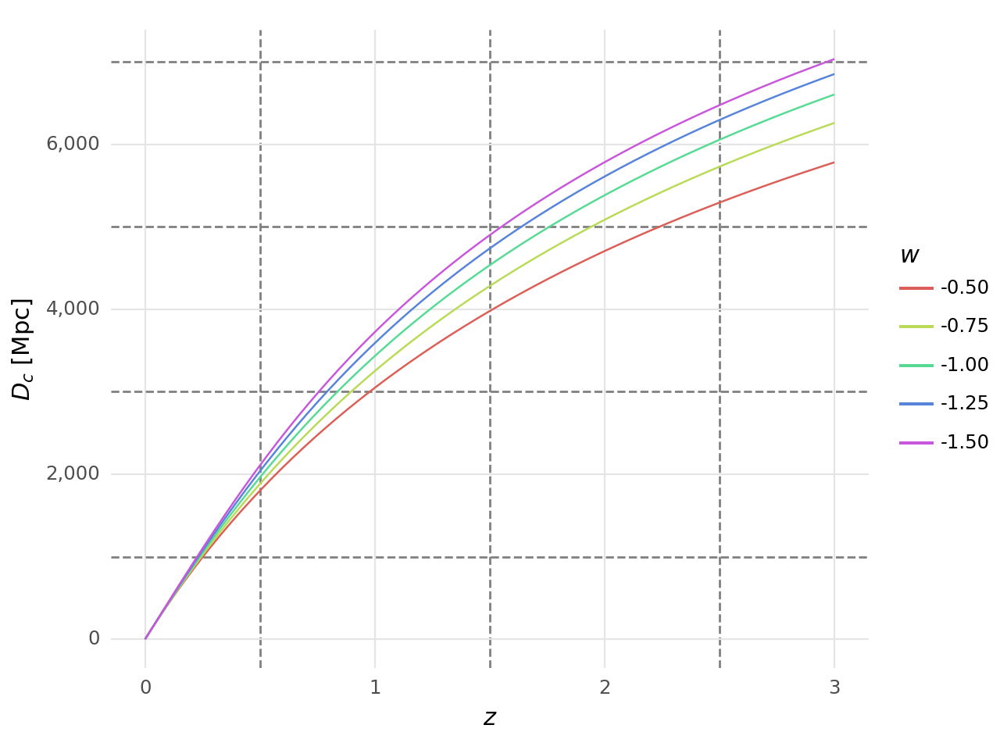
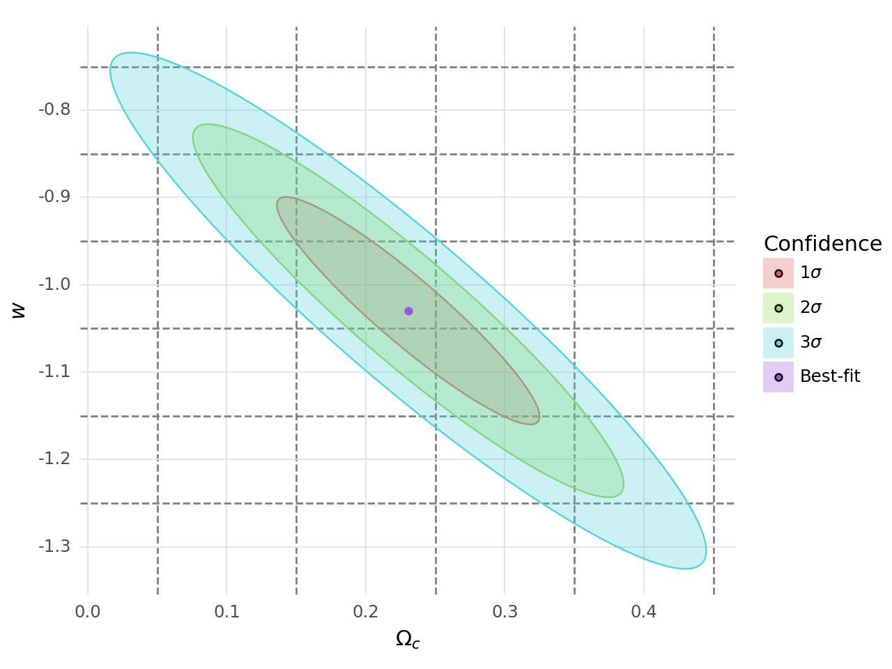
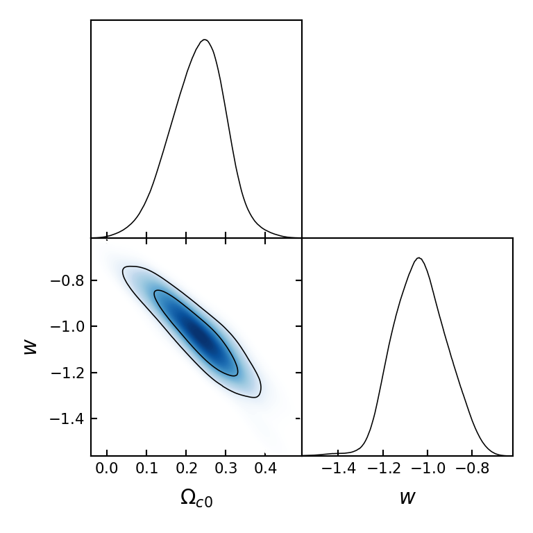

def doc_theme():
return theme_minimal() + theme(
panel_grid_minor=element_line(color="gray", linetype="--"),
)Supernova Type Ia Analysis
In this example, we demonstrate how to use NumCosmo to compute cosmological observables and fit a model to data.
Computational Cosmology
NumCosmo provides tools for calculating cosmological observables with precision. For example, the comoving distance in an XCDM cosmology up to a redshift of \(z = 3.0\) can be computed with a few lines of code using the parameters \(\Omega_{c0} = 0.25\), \(\Omega_{b0} = 0.05\), and \(w\) varying from \(-1.5\) to \(-0.5\).
import numpy as np
import pandas as pd
from plotnine import *
import getdist
from getdist import plots
from numcosmo_py import Nc, Ncm
from numcosmo_py.plotting.getdist import mcat_to_mcsamples
# Initialize the library
Ncm.cfg_init()
cosmo = Nc.HICosmoDEXcdm()
dist = Nc.Distance()
cosmo.param_set_by_name("Omegac", 0.25)
cosmo.param_set_by_name("Omegab", 0.05)
dist_pd_a = []
for w in np.linspace(-1.5, -0.5, 5):
cosmo.param_set_by_name("w", w)
dist.prepare(cosmo)
RH_Mpc = cosmo.RH_Mpc()
z_a = np.linspace(0.0, 3.0, 200)
d_a = np.array([dist.comoving(cosmo, z) for z in z_a]) * RH_Mpc
dist_pd_a.append(pd.DataFrame({"z": z_a, "Dc": d_a, "eos_w": f"{w: .2f}"}))
dist_pd = pd.concat(dist_pd_a)The code above computes the comoving distance for an XCDM cosmology with different values of the equation of state parameter \(w\).
Code
(
ggplot(dist_pd, aes("z", "Dc", color="eos_w"))
+ geom_line()
+ labs(x=r"$z$", y=r"$D_c$ [Mpc]", color=r"$w$")
+ doc_theme()
)
The Modeling
NumCosmo’s computational objects are designed for direct use in statistical analyses. In the example above, the HICosmoDEXcdm class defines the cosmological model, which is a subclass of the HICosmo class representing a homogeneous isotropic cosmology. The model’s parameters can be accessed and managed within a model set, using the MSet class, which serves as the main container for all models in a given analysis.
mset = Ncm.MSet.new_array([cosmo])
mset.pretty_log()#----------------------------------------------------------------------------------
# Model[03000]:
# - NcHICosmo : XCDM - Constant EOS
#----------------------------------------------------------------------------------
# Model parameters
# - H0[00]: 67.36 [FIXED]
# - Omegac[01]: 0.25 [FIXED]
# - Omegax[02]: 0.7 [FIXED]
# - Tgamma0[03]: 2.7245 [FIXED]
# - Yp[04]: 0.24 [FIXED]
# - ENnu[05]: 3.046 [FIXED]
# - Omegab[06]: 0.05 [FIXED]
# - w[07]: -0.5 [FIXED]Fitting Model to Data
Once models are defined and the free parameters are set, they can be analyzed using a variety of statistical methods. For example, the best-fit parameters for a given model can be found by maximizing the likelihood function.
Code
cosmo.props.w_fit = True
cosmo.props.Omegac_fit = True
mset.prepare_fparam_map()
lh = Ncm.Likelihood(
dataset=Ncm.Dataset.new_array(
[Nc.DataDistMu.new_from_id(dist, Nc.DataSNIAId.SIMPLE_UNION2_1)]
)
)
fit = Ncm.Fit.factory(
Ncm.FitType.NLOPT, "ln-neldermead", lh, mset, Ncm.FitGradType.NUMDIFF_FORWARD
)
fit.run(Ncm.FitRunMsgs.SIMPLE)
fit.log_info()
fit.fisher()
fit.log_covar()#----------------------------------------------------------------------------------
# Model fitting. Interating using:
# - solver: NLOpt:ln-neldermead
# - differentiation: Numerical differentiantion (forward)
#................
# Minimum found with precision: |df|/f = 1.00000e-08 and |dx| = 1.00000e-05
# Elapsed time: 00 days, 00:00:00.5176480
# iteration [000074]
# function evaluations [000076]
# gradient evaluations [000000]
# degrees of freedom [000577]
# m2lnL = 562.219163105043 ( 562.21916 )
# Fit parameters:
# 0.230499952926549 -1.02959391499341
#----------------------------------------------------------------------------------
# Data used:
# - Union2.1 sample
#----------------------------------------------------------------------------------
# Model[03000]:
# - NcHICosmo : XCDM - Constant EOS
#----------------------------------------------------------------------------------
# Model parameters
# - H0[00]: 67.36 [FIXED]
# - Omegac[01]: 0.230499952926549 [FREE]
# - Omegax[02]: 0.7 [FIXED]
# - Tgamma0[03]: 2.7245 [FIXED]
# - Yp[04]: 0.24 [FIXED]
# - ENnu[05]: 3.046 [FIXED]
# - Omegab[06]: 0.05 [FIXED]
# - w[07]: -1.02959391499341 [FREE]
#----------------------------------------------------------------------------------
# NcmMSet parameters covariance matrix
# -------------------------------
# Omegac[03000:01] = 0.2305 +/- 0.06233 | 1 | -0.9297 |
# w[03000:07] = -1.03 +/- 0.08595 | -0.9297 | 1 |
# -------------------------------The code above fits the XCDM model to the Union2.1 dataset, which contains supernova type Ia data. It computes the best-fit parameters for the model and the covariance matrix of the parameters using the Fisher matrix.
lhr2d = Ncm.LHRatio2d.new(
fit,
mset.fparam_get_pi_by_name("Omegac"),
mset.fparam_get_pi_by_name("w"),
1.0e-3,
)
best_fit = pd.DataFrame(
{
"Omegac": [cosmo.props.Omegac],
"w": [cosmo.props.w],
"sigma": "Best-fit",
"region": "Best-fit",
}
)
regions_pd_list = []
for i, sigma in enumerate(
[Ncm.C.stats_1sigma(), Ncm.C.stats_2sigma(), Ncm.C.stats_3sigma()]
):
fisher_rg = lhr2d.fisher_border(sigma, 300.0, Ncm.FitRunMsgs.NONE)
Omegac_a = np.array(fisher_rg.p1.dup_array())
w_a = np.array(fisher_rg.p2.dup_array())
regions_pd_list.append(
pd.DataFrame(
{
"Omegac": Omegac_a,
"w": w_a,
"sigma": rf"{i+1}$\sigma$",
"region": "Fisher",
}
)
)
regions_pd = pd.concat(regions_pd_list)The code above computes the confidence regions for the best-fit parameters using the Fisher matrix.
Code
(
ggplot(regions_pd, aes("Omegac", "w", fill="sigma", color="sigma"))
+ geom_polygon(alpha=0.3)
+ geom_point(data=best_fit)
+ labs(x=r"$\Omega_c$", y=r"$w$", fill=r"Confidence")
+ guides(fill=guide_legend(), color=False)
+ doc_theme()
)
Running a MCMC Analysis
NumCosmo also provides tools for running Markov Chain Monte Carlo (MCMC) analyses. The code below runs an MCMC analysis using the APES algorithm.
init_sampler = Ncm.MSetTransKernGauss.new(0)
init_sampler.set_mset(mset)
init_sampler.set_prior_from_mset()
init_sampler.set_cov(fit.get_covar())
nwalkers = 300
walker = Ncm.FitESMCMCWalkerAPES.new(nwalkers, mset.fparams_len())
esmcmc = Ncm.FitESMCMC.new(fit, nwalkers, init_sampler, walker, Ncm.FitRunMsgs.NONE)
esmcmc.start_run()
esmcmc.run(6)
esmcmc.end_run()Finally, we can extract the MCMC samples and visualize the results.
mcat = esmcmc.peek_catalog()
mcat.trim(2, 1)
mcsamples, _, _ = mcat_to_mcsamples(mcat, name="XCDM Supernova Ia Analysis")
g = plots.get_subplot_plotter()
g.triangle_plot(mcsamples, shaded=True)Removed no burn in